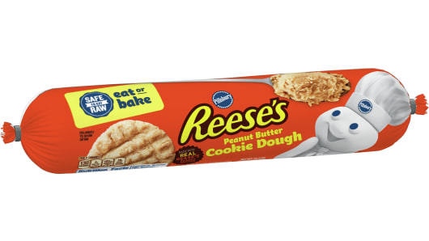

COOKIES!!!!

Description:
Cookies the lazy way. Might not taste good as home-made, but a whole lot easier.
Ingredients
- (1) tube of cookie dough
- I can't really think of anything else
Steps
- HEAT oven to 350ºF(449.8K)
- SPOON and SHAPE rounded teaspoonfuls of dough into 1-inch balls.
PLACE 2 inches apart on ungreased cookie sheet. FLATTEN in crisscross pattern,
using fork dipped in sugar.
- BAKE 9 to 14 minutes or until golden brown. COOL 1 minute; remove from cookie sheet.
Back to main page